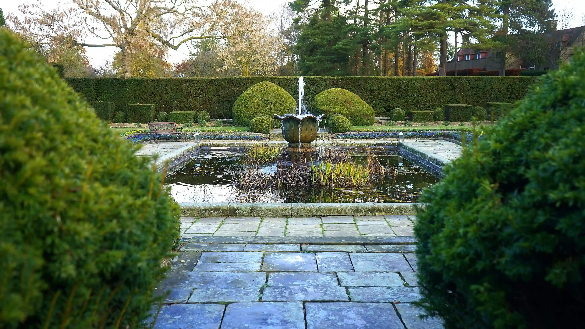

Installation de bassins d'eau et fontaines

Nous proposons un service d'installation de bassins d'eau et de fontaines pour améliorer la qualité de vos espaces verts. Au milieu de cette verdure nous proposons, pour les particuliers comme les professionnels, la mise en place d'un équipement adapter à chaque jardin. Du bassin d'eau classique en passant par la fontaine créative ou moderne, votre choix sera le notre. Pour plus de renseignements, veuillez nous contacter via nos réseaux ou notre page contact.
1 étape pour tout savoir sur les bassins et les fontaines murales

Choisir un bassin d'agrément ou préformé
Pour votre bassin d'agrément choisissez un endroit où il bénéficiera de 5 à 6 heures d'ensoleillement par jour. Évitez une implantation au creux du terrain pour que l'eau de ruissellement ne s'y déverse pas en cas de fortes averses. Avec un bassin préformé, la mise en oeuvre ne présentera pas de réelles difficultés.
Installer un bassin sur bâche
Pour concevoir librement la forme de votre bassin, adoptez la bâche d’étanchéité, en PVC ou en caoutchouc. Vous choisissez les dimensions, surface et profondeur, et il ne reste plus qu’à creuser.
Installer une fontaine murale
Décliné en de multiples modèles, la fontaine murale se compose d'une vasque surmontée d'un fronton vertical équipé d'un robinet. Adossée contre un mur, elle offre un point d'eau pratique pour arroser les plantes et beaucoup plus esthétique qu'un simple robinet
Pour en savoir plus sur nos autres installations de fontaines, contactez-nous.